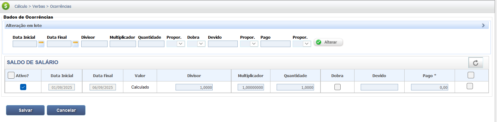

Aviso Prévio
O aviso prévio é a formalização da rescisão do contrato de trabalho, servindo como um período de transição para que tanto o empregado quanto o empregador possam se preparar para o término do vínculo empregatício. Trata-se de um direito fundamental e irrenunciável do trabalhador, garantido pela Constituição Federal. Seja trabalhado ou indenizado, o aviso prévio sempre integra o contrato de trabalho. Isso significa que o período do aviso, mesmo que não seja efetivamente trabalhado, é somado ao tempo de serviço para o cálculo de outras verbas, como férias e 13º salário. Em alguns casos, essa soma pode garantir que o empregado atinja um novo período aquisitivo de férias ou um novo mês para o cálculo do 13º.
Essa projeção (do aviso, mesmo que indenizado) é fundamental também para:
- Verificar se o empregado atinge alguma Estabilidade Provisória (gestante, cipeiro, etc.), conforme a Súmula 348 do TST.
- Determinar a data final do contrato para acesso a Benefícios Previdenciários, como o Seguro-Desemprego.
Atenção: Rescisões Específicas
O Aviso Prévio Indenizado é devido apenas pela metade (50%) nas seguintes modalidades de rescisão:
- Rescisão por Comum Acordo: O aviso prévio indenizado será pago pela metade, conforme o Artigo 484-A da CLT.
- Culpa Recíproca: O aviso prévio (trabalhado ou indenizado) será reduzido pela metade, conforme a Súmula 14 do TST.
Cabe registrar que o reajuste salarial coletivo, ocorrido no decurso do aviso, aproveita o empregado, mesmo que tenha recebido antecipadamente o salário referente ao período do aviso.
Tipos de Aviso Prévio
O aviso prévio pode ser de dois tipos principais:
- Aviso Prévio Trabalhado: O período em que o empregado continua a trabalhar. A lei garante ao trabalhador dispensa de 2 horas diárias ou 7 dias corridos para buscar novo emprego (dispensa sem justa causa).
- Aviso Prévio Indenizado: O empregador paga o período sem exigir o trabalho.
Duração do Aviso Prévio
Com a Lei nº 12.506/2011, a duração do aviso prévio tornou-se proporcional ao tempo de serviço:
- O período inicial é de 30 dias para empregados com até um ano de serviço.
- A cada ano completo de trabalho na mesma empresa, são adicionados 3 dias, podendo o aviso prévio chegar a, no máximo, 90 dias.
Exemplo: Um empregado que trabalhou por 3 anos completos tem direito a 39 dias de aviso prévio (30 dias base + 3 dias por ano adicional, totalizando 9 dias).
Tabela de Proporcionalidade do Aviso Prévio (Lei 12.506/2011)
| Tempo de serviço (anos completos) | Aviso prévio proporcional (nº de dias) |
|---|---|
| 0 | 30 |
| 1 | 33 |
| 2 | 36 |
| 3 | 39 |
| 4 | 42 |
| 5 | 45 |
| 6 | 48 |
| 7 | 51 |
| 8 | 54 |
| 9 | 57 |
| 10 | 60 |
| 11 | 63 |
| 12 | 66 |
| 13 | 69 |
| 14 | 72 |
| 15 | 75 |
| 16 | 78 |
| 17 | 81 |
| 18 | 84 |
| 19 | 87 |
| 20+ | 90 |
Base Legal e Jurisprudência
O aviso prévio é um direito consolidado na legislação e na jurisprudência trabalhista:
Fontes Normativas
Constituição Federal (CF/88):
- Artigo 7º, inciso XXI:
"aviso prévio proporcional ao tempo de serviço, sendo no mínimo de trinta dias, nos termos da lei;"
CLT (Consolidação das Leis do Trabalho):
- Artigo 487 (Concessão e Prazo):
Trata da obrigatoriedade e do prazo mínimo de 30 dias para o aviso prévio, determinando o direito a redução de jornada ou dias de ausência.
- Artigo 484-A (Extinção por Acordo):
O contrato de trabalho poderá ser extinto por acordo entre empregado e empregador, caso em que serão devidas as seguintes verbas trabalhistas:
-
I – por metade:
Lei nº 12.506/2011:
- Proporcionalidade:
Regulamentou o acréscimo de 3 dias no aviso prévio a cada ano completo de serviço, podendo chegar ao máximo de 90 dias.
Lei Complementar nº 150/2015 (Empregado Doméstico):
- Artigo 23, § 2º (FGTS Indenizado):
Trata da obrigatoriedade do depósito dos valores de FGTS do mês da rescisão e da indenização compensatória de 40% sobre o montante de depósitos, inclusive no aviso prévio indenizado.
Jurisprudência
O Tribunal Superior do Trabalho (TST) consolidou o entendimento sobre diversos aspectos do aviso prévio, detalhando sua aplicação prática:
Natureza e Irrenunciabilidade
Súmula 276/TST:
"O aviso prévio é irrenunciável pelo empregado. O pedido de dispensa de cumprimento não desobriga o empregador de pagar o valor correspondente, salvo comprovação de haver o prestador de serviços obtido novo emprego."
Contagem e Projeção do Prazo
OJ 82/SDI-I/TST (Baixa na CTPS):
"A data de saída a ser anotada na CTPS deve ser a do último dia do aviso prévio, ainda que indenizado."
Súmula 380/TST (Contagem do Prazo):
"Aplica-se a regra do 'Código Civil' (art. 132) para a contagem do prazo do aviso prévio, excluindo-se o dia do começo e incluindo-se o dia final."
Reflexos e Estabilidade
Súmula 348/TST (Estabilidade):
O aviso prévio indenizado se soma ao período de serviço para fins de aquisição de estabilidade provisória (ex: gestante, cipeiro).
Súmula 305/TST (FGTS):
O pagamento relativo ao período de aviso prévio, trabalhado ou indenizado, integra o cálculo da indenização de 40% do FGTS devida com a despedida injusta.
Súmula 182/TST (Projeção e Reajuste Salarial):
O tempo de aviso prévio, mesmo indenizado, conta-se para efeito da indenização adicional prevista no art. 9º da Lei nº 6.708, de 30.10.1979 (referência histórica à projeção de reajuste salarial).
OJ 83/SDI-I/TST (Extinção por Empregador):
A extinção do contrato de trabalho, por iniciativa do empregador, no curso do aviso prévio dado pelo empregado, configura a dispensa sem justa causa, e o empregador é obrigado a pagar todas as verbas rescisórias como se a demissão tivesse ocorrido por sua iniciativa.
Situações Específicas
Súmula 14/TST (Culpa Recíproca):
No caso de culpa recíproca na rescisão do contrato de trabalho, o aviso prévio é reduzido pela metade.
Nota Técnica 184/12/MTE:
Esclarece que a proporcionalidade do aviso prévio (3 dias por ano) aplica-se exclusivamente ao empregado em caso de dispensa sem justa causa e considera apenas anos completos.
Posicionamento da Receita Federal (Aviso Prévio Indenizado)
SOLUÇÃO DE CONSULTA Nº 4.021, DE 22 DE MARÇO DE 2019 (RFB):
O Superior Tribunal de Justiça (STJ), ao julgar o Recurso Especial nº 1.230.957/RS (Recurso Repetitivo), afastou a incidência das contribuições sociais previdenciárias sobre o aviso prévio indenizado. Em razão do disposto no art. 19 da Lei nº 10.522, de 2002, na Portaria Conjunta PGFN/RFB nº 1, de 2014, e na Nota PGFN/CRJ nº 485, de 2016, a Receita Federal do Brasil (RFB) encontra-se vinculada a este entendimento.
- Proporcionalidade:
Base de Cálculo e Deduções
1. Base de Cálculo (Remuneração)
O valor do aviso prévio é calculado com base na maior remuneração do empregado, que é a soma do salário fixo do último mês com a média das verbas variáveis habituais do último ano (12 meses).
Fórmula Base de Cálculo
Base Remuneratória = Última Remuneração Fixa + Média Duodecimal Variável
O valor final do Aviso Prévio será: (Base Remuneratória / 30 dias) x Dias de Aviso Prévio Proporcional
Composição Fixa (Última Remuneração)
Considera o valor pago no último mês de trabalho.
- Salário Base Mensal.
- Adicionais de natureza salarial pagos de forma fixa (ex: Periculosidade, Insalubridade).
- Gratificações fixas.
Composição Variável (Média Duodecimal)
Corresponde à média de verbas habituais dos últimos 12 meses (ou período do contrato, se menor).
- Horas Extras (Média).
- Comissões (Média).
- Adicional Noturno Variável (Média).
- Salário-Utilidade (prestações in natura habituais).
2. Exemplos Práticos de Cálculo
Exemplo 1: Base com Salário Fixo e Adicional Fixo
- Anos de Serviço: 3 (Aviso Prévio = 39 dias).
- Remuneração Total (Fixa): R$ 1.560,00 (Salário + Adicional).
- Cálculo: (R$ 1.560,00 / 30 dias) x 39 dias.
- Resultado: R$ 2.028,00.
Exemplo 2: Base com Salário Fixo e Média Variável
- Anos de Serviço: 5 (Aviso Prévio = 45 dias).
- Remuneração Base: R$ 2.500,00 (Fixo) + R$ 750,00 (Média Variável).
- Remuneração Total: R$ 3.250,00.
- Cálculo: (R$ 3.250,00 / 30 dias) x 45 dias.
- Resultado: R$ 4.875,00.
3. Incidências Tributárias, Previdenciárias e Deduções
Incidência de Imposto de Renda (IR) e INSS
A incidência varia crucialmente conforme o tipo de aviso prévio (Súmula 386/STJ).
| Tipo de Aviso Prévio | Natureza | Incidência de IR | Incidência de INSS |
|---|---|---|---|
| Trabalhado | Remuneratória | SIM (Rendimento Tributável) | SIM (Base de Contribuição) |
| Indenizado | Indenizatória | NÃO (Imunidade Tributária) | NÃO (Decisão do STJ) |
Outras Deduções e Descontos
Além das incidências acima, outros valores podem ser deduzidos do crédito do empregado:
- Aviso Prévio Não Cumprido: Desconto do valor correspondente aos dias do aviso prévio no caso de pedido de demissão sem cumprimento.
- Descontos autorizados por lei ou contrato (ex: pensão alimentícia, empréstimo consignado, adiantamentos salariais).
- Descontos por danos causados à empresa (mediante acordo prévio ou dolo).
Verbas Reflexas
O período, mesmo que indenizado, integra o tempo de serviço para todos os fins, o que gera reflexos em diversas outras verbas rescisórias:
Verbas que Recebem Reflexo
- Férias Proporcionais: O período do aviso prévio (trabalhado ou indenizado) é considerado tempo de serviço para o cálculo das férias. Se o acréscimo de dias fizer com que o empregado complete um novo período aquisitivo de 12 meses, ele terá direito a mais um 1/12 avos de férias.
- 13º Salário Proporcional: Se o aviso prévio se estender por 15 dias ou mais dentro de um novo mês (após a comunicação da dispensa), o empregado terá direito a mais 1/12 avos de 13º salário proporcional.
- FGTS (Fundo de Garantia por Tempo de Serviço): O aviso prévio (tanto o trabalhado quanto o indenizado) é base de cálculo para o depósito do FGTS. O empregador deve depositar o valor correspondente ao período do aviso e sobre ele incide a multa de 40% (no caso de dispensa sem justa causa).
Calculadora (Simulação)
Utilize esta calculadora para determinar a quantidade de dias e o valor total do aviso prévio com base no salário e no tempo de serviço.
Calculadora de Dias de Aviso Prévio
Preencha o campo abaixo para calcular os dias de aviso prévio. O resultado será automaticamente inserido na calculadora de valor.
Calculadora de Valor de Aviso Prévio
Por favor, utilize a calculadora de dias acima para habilitar o cálculo de valor.
Lançamento no PJe-Calc
Necessidade de Parametrização no Módulo de Dados do Cálculo
Antes de lançar a verba do Aviso Prévio, é fundamental verificar a parametrização na tela inicial "Parâmetros do Cálculo" (conforme imagem anexa), pois ela define como o sistema tratará a projeção e a duração do Aviso Prévio:
- O campo "Prazo de Aviso Prévio" pode ser configurado como Calculado (padrão de 30 dias + 3 por ano, máx. 90), Não Apurar (30 dias fixos) ou Informado (nesta opção o sistema abrirá um campo ao lado para que o usuário possa informar o prazo).
- O campo "Projetar Aviso Prévio Indenizado" deve estar marcado para que o período seja somado ao tempo de serviço para fins de férias, 13º e outros reflexos, e para que o sistema realize o cálculo e a projeção de forma automática.
Lançamento do Aviso Prévio
A seguir, confira o passo a passo para o lançamento da verba no PJe-Calc, utilizando a opção "Expresso":
-
Acessar Verbas e Escolher Lançamento: No menu de
navegação à esquerda, clique na opção Verbas para iniciar o lançamento. Após o
comando,
será exibida a tela para escolha do Lançamento da Verba. Escolha a opção Expresso.

- Seleção da Verba: O sistema abrirá as opções de verbas, escolha a verba Aviso Prévio e clique no botão Salvar
-
Quadro de Verbas e Ações: O sistema exibirá um quadro
com os campos:
- Ações - contendo as opções de configurações da verba selecionada (parâmetros,
ocorrências e
exclusão)

-
- Parâmetros da Verba

-
- Ocorrências da Verba

-
- Excluir

- Verba Principal - verba selecionada para lançamento.
- Verba Reflexa - em que ao clicar no botão Exibir serão listadas todas as verbas reflexas ligadas a Verba Principal.
- Parametrização da Verba: Ao clicar no botão Parâmetros da Verba serão exibidas todas as configurações necessárias para a parametrização da Verba Principal.
- Registro de Ocorrências: Ao clicar no botão Ocorrências da Verba serão exibidas todas as configurações necessárias para registro das ocorrências da Verba Principal. 